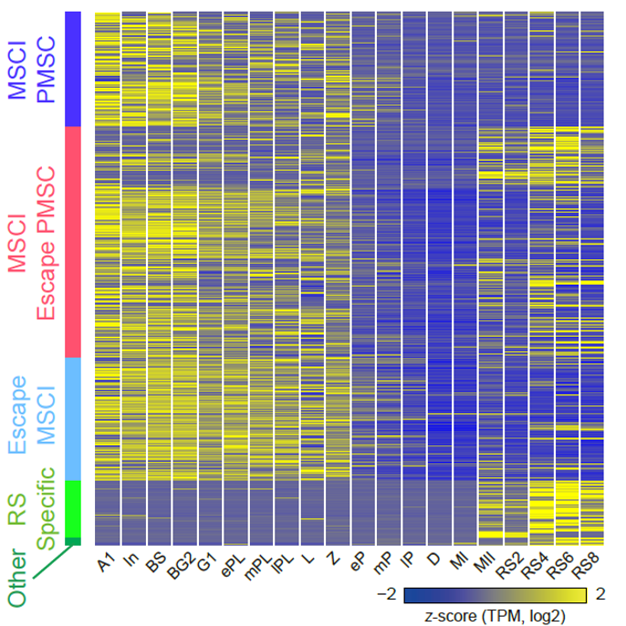

教学科研
- 
-
汤富酬课题组与合作者建立小鼠精子 发生过程高精度转录组图谱
生命学院汤富酬课题组与合作者在Cell Research在线发 文，开创性地将精子发生同步化方法与生殖细胞特异性荧光标记相结合 ，分离获取了高纯度的处于不同发育阶段的小鼠生精细胞，并应用 高精度单细胞转录组测序的方法，建立了小鼠精子发生过程的转录组精细图谱。
媒体北大
- 学习时报 王栋、曹德军：反对贸易保护主义 拥抱再全球化进程
- 人民日报 陆绍阳 ：求真学问 练真本领
通知公告 北大声明
- 07-12 . 2018 关于“北京北大后工商管理促进会”（北大后E促进会）有关情况的声明
- 02-01 . 2018 关于高国潮有关情况的声明
- 01-10 . 2018 关于顾琳娣等人及相关机构有关情况的声明